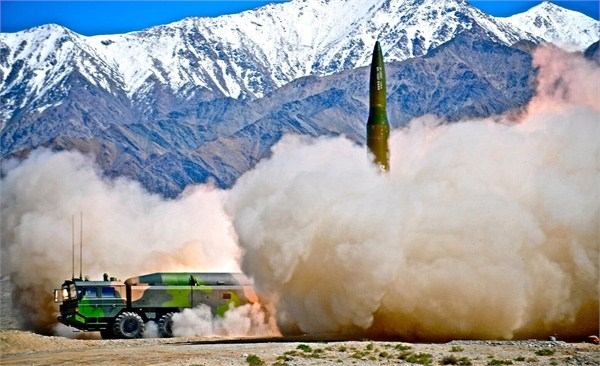
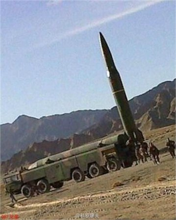
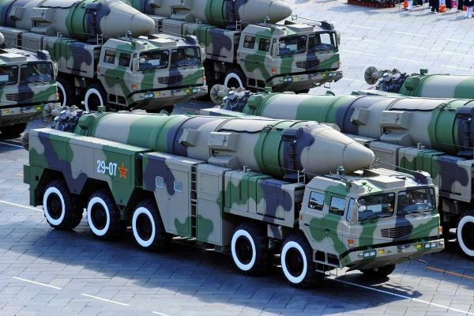
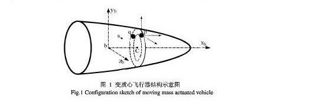

2014-10-01 18:04:00
原本九月的上半，我還覺得没什麼新消息可寫。到了最後幾天，新题材如暴雨一般傾盆而下，以致有些次要的消息就只好先放着。這裡我來談談東風16飛弹，這些消息其實是早一個多禮拜就出來了。
上個月第一個挑起東風16這個話題，是國安局長蔡得勝，他宣布東風16已經開始正式部署。隨後美國媒體給出較詳細的描述，指出其射程在1000公里以上，足以覆蓋第一島鏈範圍，尤其是美軍在琉球的空軍基地，更是主要目標。當然這些事情軍迷們早在一年多前就已知道，而且已在《解放軍報》上看過東風16的照片。我在前文《中共再次成功進行陸基反導試驗》也已提過，共軍近年的反導試驗都是用東風16來當靶弹。

東風16的試射圖；可以看到其子弹式外型。弹頭部非常之大，裝藥至少在一噸以上，可能為1.5-2噸，為以往的中短程東風飛弹的三倍以上。發射時以裸弹豎立點火，運載車上的是個類似東風26的保護罩，而不是像東風21那様的發射包裝桶，也不是像東風11和東風15那様的裸奔。
從東風16的射程來看，它應該是用來取代東風21的早期型，目標是離大陸海岸1000-1500公里的美軍和日軍基地。共軍二炮對弹道飛弹的命名規則是十位數字代表火箭的級數，所以從東風16這個名字就可知道它用的是單級火箭。以單級火箭而達到以往東風21的雙級火箭的射程，而且還有了三倍的酬載，固然代表了中共過去30年來在火箭技術上的進步，也告訴我們它的尺寸和總重不會低於東風21。

這是發射前的照片，可以清楚地看到東風16非常粗壯的單級運載火箭，其直徑大約是1.2公尺。運載車有五對負重輪，除了尾部稍有修改之外，和東風21的運載車一模一様。

中共國慶閲兵中的東風21；從這個角度看，運載車和東風16完全相同，只有弹體包裝不一様。共軍之所以有必要開發東風16，是因為東風21原本是1980年代早期設計來携带核弹頭打撃蘇聯在東亜和中亜的目標。冷戦結束後，改用高爆弹頭來對付美日，這時半噸的酬載就顯得威力不够。三十多年下來，運載火箭不斷改良，但是受限於整體布局，酬載不能增加，只能把射程提高到2000-2500公里。這個距離剛好是第一島鏈和第二島鏈之間的西太平洋，所以除了東風21D反艦弹道飛弹外，東風21系列在中美軍備角力中，就顯得有些雞肋。東風16則是為打撃第一島鏈的目標而量身訂製的：射程剛好足够，而其在中短程飛弹中史無前例的巨大弹頭，則有两個非常重要的好處。首先是其終端速度將遠超一般只有半噸重的弹頭，可以達到10馬赫以上，對戦區反導系統例如愛國者三型或我在前文《中共再次成功進行陸基反導試驗》曾提過的THAAD，造成極大的困難。其次是高速加上成倍的質量，再加上额外的空間可以裝穿甲弹頭，其對加固工事的侵穿能力將達到東風21的10-20倍左右。一旦撃穿，如此大量的高爆藥也將保證可以把目標完全摧毁。因此東風16在戦術上的意義很明顯地是用來“踹門”的：也就是在戦事剛爆發的時候，用來打撃敵人的防空和反導系統、機場、高級指揮部和通訊中心。美軍在過去25年來，在這項先聲奪人的任務上，一直非常成功，不過用的不是中程弹道飛弹，而是各型各類的隱身飛機。

自從有了如GPS的衛星導航之後，弹道飛弹可以在軌跡終端進行修正，可是美俄的軌跡修正技術是不同的。美國的辦法，例如我在前文《中共再次試射WU-14高超音速飛行器》中提到的AHW，用的是小翼；阻力大，速度低。俄國人的方案則是所謂的變質心技術：利用變更弹頭内質量的分布來產生攻角而改變飛行方向；阻力小，終端速度高。中共原本用過弹翼，最近也獨立開發了變質心技術，所以東風16的弹頭不須要有弹翼。而變質心技術的變軌能力也進一步增加了反導系統對其進行攔截的難度。圖中的設計有两個質量沿環型軌道移動，這是共軍的獨門技術；俄军的設計用的是十字型軌道。